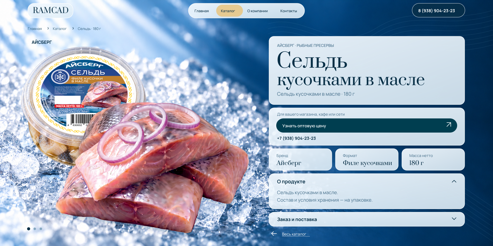
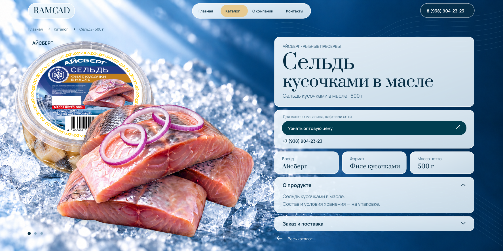
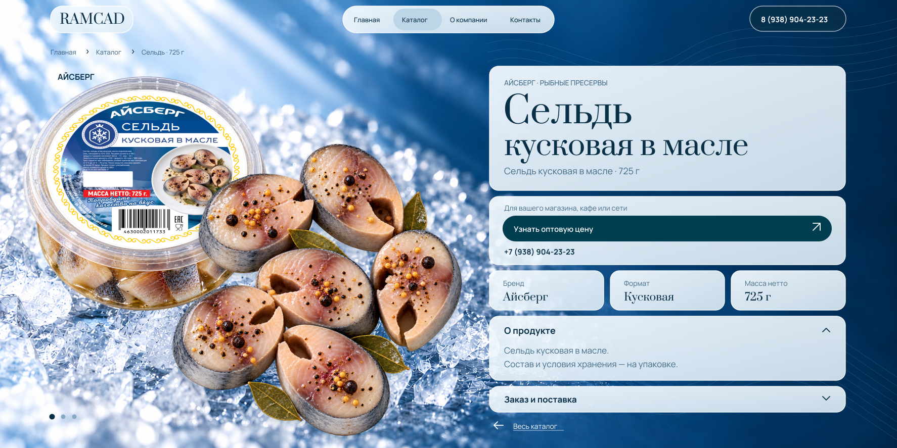
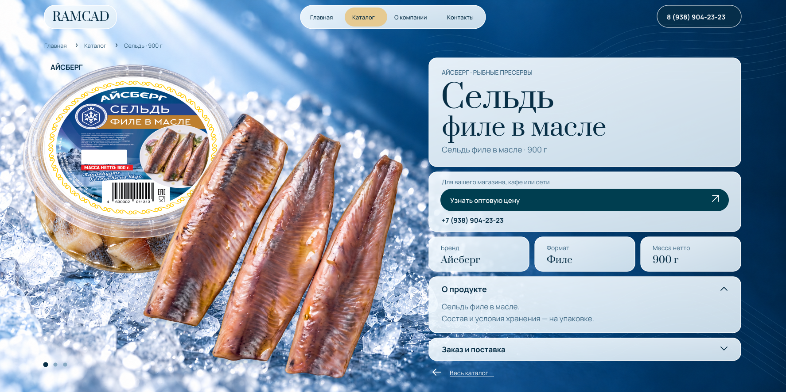
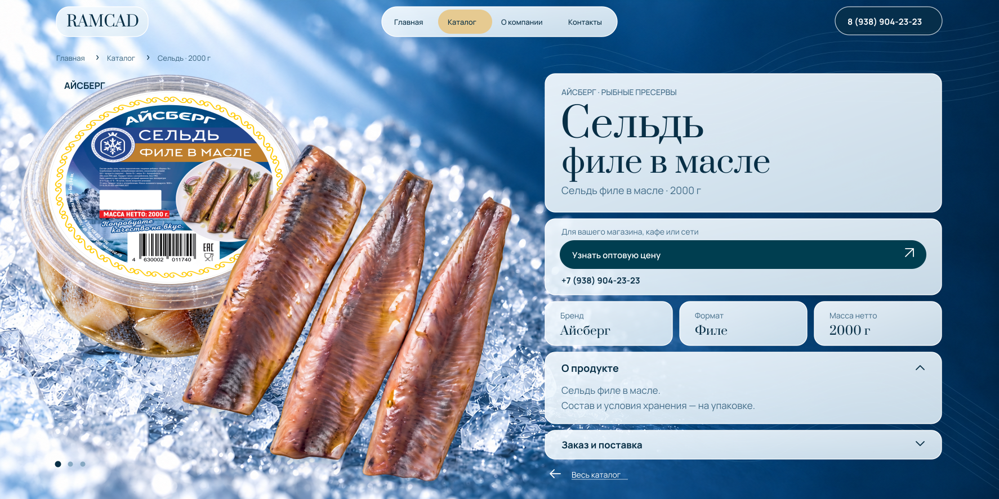
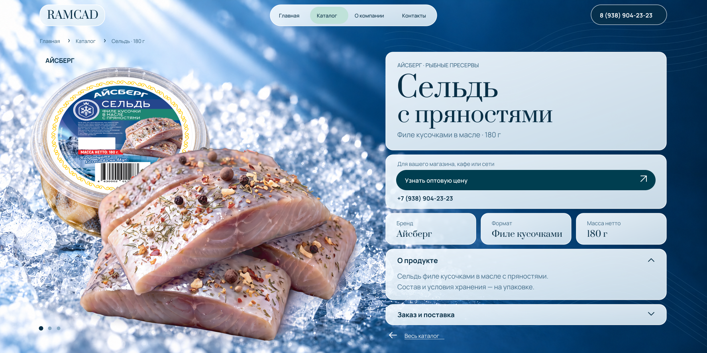
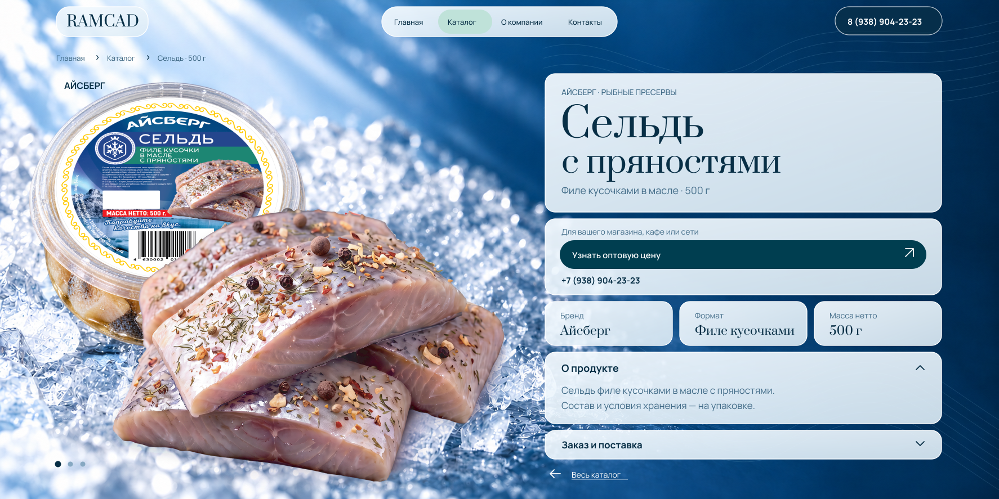
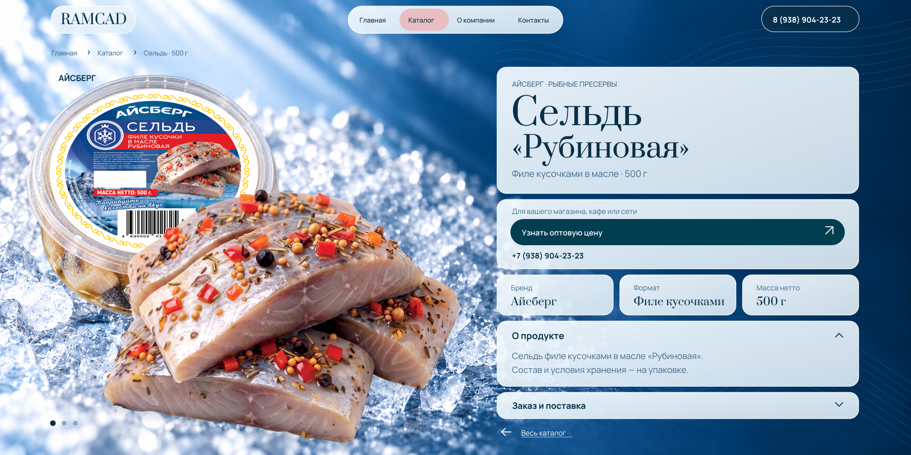

КОЛЛЕКЦИЯ / 08 ТОВАРОВ
Вся линейка.
В одном стиле.
Сельдь «Айсберг»: рыба на льду соответствует изображению на каждой этикетке.














КОЛЛЕКЦИЯ / 08 ТОВАРОВ
Сельдь «Айсберг»: рыба на льду соответствует изображению на каждой этикетке.







